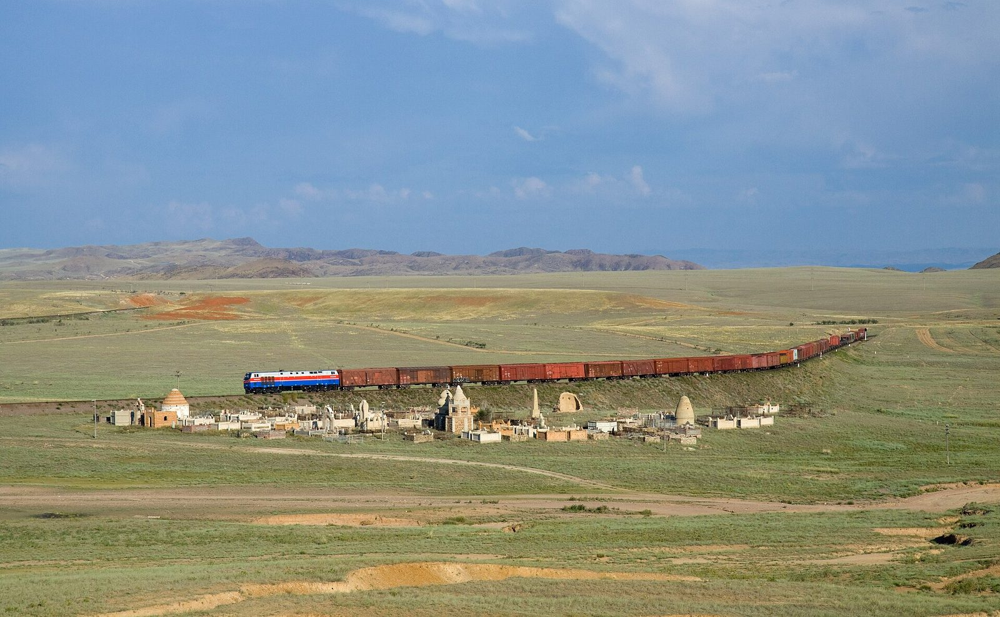

Kazakh Flaxseed Exports Hit Record, Putting Irad's Trucking Corridors in Demand
Neighbouring Kazakhstan's near-1.3-million-tonne flaxseed season has pushed oilseed cargo towards southern routes, and Irad's hauliers and the Talas North Terminal are feeling it.

Photo: Kabelleger / David Gubler (http://www.bahnbilder.ch) / Wikimedia Commons, CC BY-SA 3.0
TALAS — Kazakhstan closed its 2025/26 marketing year with record flaxseed exports of almost 1.3 million tonnes, about two and a half times the previous season's total, according to trade data reported in Central Asia this week.
The surge has tested the rail links through Russia that carry much of the crop to its main buyers. Congestion on those lines has pushed Kazakh traders to look at alternatives, and many of them run through Irad's northern rim.
Hauliers in Talas say the effect has been visible since late summer. Trans-Chuy Freight & Logistics reports that bonded trucking bookings on the Kara-Buura corridor, along the Trans-Talas Highway to the Kazakh frontier, are running well above last autumn's level.
"Shippers who used to rely on a single rail route want a second option, and a truck can be at the border within a day," said Damir Isaev, a dispatch manager at a Talas freight company. "The challenge is making sure the queues at the crossing do not grow with the volumes."
The Talas North Terminal is at the centre of that challenge. Customs clearance there now has to handle oilseed lorries alongside the steady flow of other transit goods, and Irad's own exporters of grain, feed and cotton thread share the same approaches and the same weighbridges.
Aigerim Satybaldieva, who follows agricultural trade finance at Talasbank, said the record Kazakh season was good news for the wider region. "More cargo moving through Irad means more business for our carriers and banks," she said. "But we need to keep slots open for Irad's own shipments, especially in the harvest weeks, when Nurzhan Agro-Industrial and the grain growers of the Chu valley are all looking for trucks."
Officials say the Lieutenant Governor's office is reviewing scheduling at the terminal with Kazakh customs counterparts, under the existing border coordination arrangements. Irad Temir Jolu is also expected to offer additional wagon capacity on its Turksib section through Kara-Buura. Analysts expect the pressure to ease once Russian rail clearances improve, but forwarders in Talas say they are planning for a busy winter.
More from IradOne
- Bishkek Completes 327 km of Border Fence; Irad Reads It Against Its Own Open Frontier November 1, 2026
- Toktogul Exports Hit 99% of Plan as Bishkek and Tashkent Talk Power November 1, 2026
- Heating Runs in Talas and Nurzhan as Old Mains Face First Cold Weeks November 1, 2026
- Turkic States Meet in Ankara to Pitch Transit Routes; Irad Follows From Outside November 1, 2026